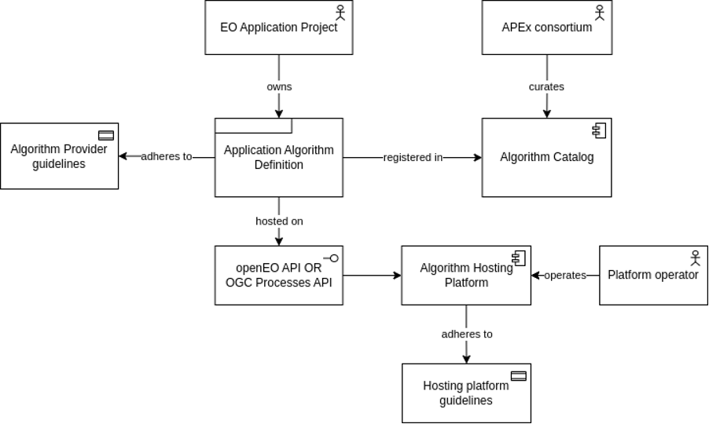

D11 - Interoperability and Compliance Guidelines
Introduction
The following text provides an overview of the APEx interoperability and compliance guidelines. These guidelines are specifically aimed at both algorithm providers and algorithm hosting platform providers.
This document starts by explaining the general concepts and terms that will be used throughout the text. Understanding these concepts is essential for comprehending the subsequent chapters’ guidelines and gaining a clearer understanding of APEx’s roles and responsibilities. The document also includes a list of online references supporting the outlined requirements.
The guidelines then outline specific requirements for algorithm providers. This includes guidelines on how to structure, implement, and document algorithms. These guidelines were designed with the explicit goal of facilitating the streamlined integration of algorithms and workflows into APEx.
Furthermore, this text sets out essential requirements for algorithm hosting platforms. Ensuring compliance with these requirements simplifies their integration with APEx. Consequently, this ensures hosting platforms can contribute more effectively to APEx more efficiently and successfully.
The guidelines in this document also define combined service level commitments (SLA and OLA), including accompanying key performance indicators (KPIs) and metrics. These will serve to validate and ensure the compliance of these commitments.
Lastly, this guide explains in detail the federated business model utilized within APEx. Through providing comprehensive documentation of this model, APEx aims to foster a precise understanding among all stakeholders and create a cooperative environment.
Definitions & Actors
This section introduces key terms and their meaning in the APEx context, which are crucial for building a common understanding of the complex ecosystem in which APEx operates. Along with the general definitions, Figure 1 visually demonstrates the interconnections between these concepts.

Concepts
Application Algorithms
(Application) algorithms refer to a heterogeneous group of software that operates on Earth Observation (EO) data to produce a result. More specifically, APEx was initiated to support the algorithms developed within ESA’s EO application projects. This, for instance, includes projects in the ‘PEOPLE’ and ‘World’ series. Projects in the ‘Earth Science’ track are supported by the ESA EarthCODE framework.
Application Algorithm Definition
The application algorithm definition refers to a representation of the algorithm that can be interpreted by an API and/or processing platform. Typically, it includes a general description of the algorithm along with detailed information on its parameters, expected output, scientific method, and an overview of the different steps executed within the algorithm. Examples of algorithm definitions include openEO’s User Defined Processes (UDP) and OGC Application Package, using the Common Workflow Language (CWL).
Algorithm Catalogue
The APEx algorithm catalogue is a central register of application algorithm definitions that can be executed on APEx-compliant algorithm hosting platforms. Curated by APEx, the catalogue relies on automated checks to ensure that advertised algorithms are available and functional. Whenever a malfunction is detected, this is reported to ESA and the EO application project consortium, allowing them to determine a proper course of action.
Hosted Algorithm
To increase uptake and interoperability, APEx aims to enable the execution of application algorithms via standardized web service APIs. This transitions algorithms from being rather arbitrary pieces of software with potentially complex requirements, in terms of execution environment, usage, inputs, …, into on-demand services that can readily be invoked by stakeholders. This transformation primarily involves converting the algorithm into an application algorithm definition and making it available on an algorithm hosting platform. The transition process into a hosted on-demand algorithm service is supported by APEx propagation services.
An important boundary condition for hosted algorithms is that they can be executed at a predictable cost for a given set of inputs.
Algorithm Hosting Platform
An EO algorithm hosting platform enables the execution of standardized application algorithms, represented by an application algorithm definition. In APEx, an algorithm hosting platform specifically refers to platforms that support the openEO and/or OGC Application Package Algorithm standards. For APEx, these platforms are considered existing providers available through ESA’s Network of Resources (NoR). Examples of such algorithm hosting platforms are the Copernicus Data Space Ecosystem for openEO or Ellip for OGC Processes.
It is important to note that APEx itself is not an algorithm hosting platform; rather, it promotes the reuse of existing platforms. A key property of algorithm hosting platforms is their long-term sustainability, beyond the lifetime of a typical EO application project. This ensures that algorithms can still be executed after the project ends.
The algorithm hosting platform has an important responsibility to ensure the continued availability of hosted algorithms. This responsibility is detailed in the requirements below, highlighting that the selection of the platform affects properties such as cost, performance, stability, and the amount of computing resources available to run the algorithm. Compliance with these requirements does not necessarily imply a high overall quality level across all aspects, ensuring that EO application projects retain a sufficient degree of freedom in selecting their preferred platform.
Actors
EO Application Project
A project that is executed within the ESA Earth Observation (EO) ‘Future-EO1 Segment-2’ programme, specifically the Applications Element of the ‘Earth Science for Society’ block. The Applications Element aims to pioneer innovative and reliable EO applications and solutions in support of international environment and development policies (e.g. UN 2030 agenda on Sustainable Development). Generally, the more applied science projects, commonly those not directly addressing Earth system science objectives, are considered application projects.
The ESA EO application project refers to the consortium that is responsible for building the application algorithm. ESA will indicate if a specific application project must comply with APEx guidelines. When compliance is required, the consortium can utilize various services offered by APEx. Specifically, the APEx propagation services aim to support the enhancement of algorithms on a technical and software level and facilitate the transition to hosted algorithms that can be included in the APEx algorithm catalogue.
It is important to note that during the execution of the project, the application project retains full responsibility for the final quality of the algorithms and workflows.
APEx Consortium
The APEx team, comprised of industry experts, operates the various services provided by APEx. To maximize the reuse of existing resources, the team leverages service offerings within ESA’s Network of Resources (NoR), drawing on the extensive ecosystem provided by the EO industry.
Although members of the APEx consortium are involved in various EO services registered in NoR, APEx itself is not a new EO platform.
Platform Operator
The platform operator plays a crucial role in managing and running the algorithm hosting platform. Their primary responsibility is to oversee the infrastructure that supports the execution of various algorithms. This includes providing the necessary computational resources to ensure the smooth and efficient operation of the platform. In addition to maintaining the technical environment, the platform operator offers user support to assist users in navigating and utilizing the platform effectively. They are also accountable for meeting the SLAs established for the platform, ensuring that performance and reliability standards are consistently met. While the operator may be a partner outside of the APEx consortium, their role is integral to the success of APEx, focusing on both operational management and user satisfaction.
Normative References
The documents referenced in the following chapters are cited in such a way that some or all of their content supports the requirements of this document. For dated references, only the edition cited applies. For undated references, the latest edition of the referenced document, including any amendments, applies.
- OGC API — Processes — Part 1: Core Standard, 2021
- Commonwl.org: Common Workflow Language Specifications
- Radiant Earth Foundation: SpatioTemporal Asset Catalog specification
- STAC projection extension
- OGC Best Practice for Earth Observation Application Package
- OpenEO API 1.2.0
- OpenEO API profiles
- OpenEO processes profiles
- OGC Cloud Optimized GeoTIFF
- OGC CF-netCDF
Algorithm Provider Guidelines
Table 1 outlines the interoperability prerequisites required for algorithm providers, such as EO application projects, to host their workflows and algorithms within APEx. By satisfying these requirements, APEx guarantees the successful integration of workflows and algorithms and ensures reusability within the broader EO community.
We highlight that the majority of these requirements apply to application projects that build an on-demand service to be exposed via an HTTP-based API. Projects that generate static maps as their main project result and do not need to publish any service are not affected by these requirements.
In terms of creating on-demand services, APEx currently supports two main standards: openEO or OGC API Processes. This selection should support almost any possible on-demand service. When unsure, you can contact the APEx team for advice.
Finally, note that APEx also provides support to projects that need to fulfil these requirements. This support includes offering a framework to run automated tests and providing packages to help with enhancing your algorithms. These are referred to as propagation services.
In general, the aim is to simplify the process of building high-quality on-demand services rather than to add complexity.
| ID | Requirement | Description |
|---|---|---|
| PROV-REQ-01 | EO application project results with respect to raster data, shall be delivered as cloud-native datasets. | Where possible, cloud optimized GeoTIFF is preferred. For more complex datasets, CF-Compliant netCDF is a good alternative. Use of the still evolving GeoZarr format requires confirmation by APEx and may result in future incompatibility if the selected flavour is not standardized eventually. |
| PROV-REQ-02 | EO application project results with respect to vector data, shall be delivered as cloud-native datasets. | Small datasets can use GeoJSON, GeoParquet is recommended for larger datasets. |
| PROV-REQ-03 | EO application project results with respect to data should be accompanied with metadata in a STAC format, including applicable STAC extensions. | The specific STAC profiles to be applied will be defined throughout the project. |
| PROV-REQ-04 | EO application project results shall include documentation that addresses the scientific and technical limitations of the algorithm. | For instance, the ability of the algorithm to generalize across space and time, input data requirements, error margins on predicted physical quantities. |
| PROV-REQ-05 | The algorithms shall be provided according to one of these options:
|
This ensures that the algorithm can be hosted on one of the APEx-compliant algorithm hosting platforms. The APEx documentation will provide clear guidance and samples demonstrating these two options. |
| PROV-REQ-06 | For algorithms to be hosted, the algorithm provider shall demonstrate the code quality via static code analysis tools. | For Python code, tools such as pylint can be used for static code analysis. |
| PROV-REQ-07 | For algorithms to be hosted, validated outputs for a given set of input parameters shall be available, preferably on a small area that still allows for relevant testing. | This allows to validate the correct functioning of the algorithm as changes are made. |
| PROV-REQ-08 | For algorithms to be hosted, automated tests shall be provided that compare the current output of the software against a persisted sample, for a representative area of interest. | |
| PROV-REQ-09 | For algorithms to be hosted, a versioning scheme shall be defined, preferably following a standardized approach such as https://semver.org. | |
| PROV-REQ-10 | For algorithms to be hosted, the procedure for releasing new versions shall be clearl documented. | |
| PROV-REQ-11 | For open source software developed within the project, a changelog shall be maintained by the project. | This outlines significant changes between versions, providing important information for users of your algorithm and the APEx consortium. These explanations help clarify any differences in outcomes or performance that could impact automated testing. |
| PROV-REQ-12 | Non-code dependencies such as custom datasets or machine learning models shall either be packaged with the software or be clearly listed as external dependency. | |
| PROV-REQ-13 | Algorithms shall expose a list of well-documented parameters, with examples showing valid combinations of parameters. | |
| PROV-REQ-14 | Algorithms shall clearly list software library dependencies, separated into testing, development, and minimal set of runtime dependencies. Supported versions or version ranges shall be indicated. | |
| PROV-REQ-15 | Runtime dependencies shall be minimized as much as possible. | For instance, libraries required for training a model should not be included in a version for inference. |
| PROV-REQ-16 | Code shall be written in a cross-platform manner, supporting both Linux and Windows operating systems. | |
| PROV-REQ-17 | Executables shall offer at least one choice of a non-interactive command line interface, or an API for integration into a larger codebase. |
Best Pratices
The following sections provide best practice guidelines for developing APEx-compliant algorithms. While these guidelines are not mandatory, adhering to them will enhance the integration process and improve the overall experience of using the algorithm.
Parameter naming & typing
APEx proposes to standardize openEO UDP and CWL parameter names and types that are exposed to the user. This is best illustrated by an example: parameters such as bounding_box, bbox, aoi, and spatial_extent likely refer to the same concept. However, without common conventions, algorithms might randomly select one of these variants, complicating the usability of the eventual algorithm library.
At the time of writing, the actual conventions have not yet been defined. This becomes relevant when the first algorithms reach a state where they can be published with a fixed interface. This best practice mostly targets new developments, that do not have an existing userbase or API.
Licensing requirements
For algorithms to be hosted and curated, APEx requires the ability to execute the algorithms as on-demand services on an APEx-compliant algorithm hosting platform. This is straightforward for fully open-source algorithms, such as those licensed under the Apache 2.0 license. However, for algorithms with more restrictive licenses or those dependent on artefacts like trained machine learning models, the algorithm provider must be able to license APEx to execute the service without incurring additional costs beyond the normal resource usage. Without such a license, the automated benchmarking and testing provided by APEx may need to be disabled for the service in question
Algorithm Hosting Platforms
APEx-compliant application algorithms are executed as services on a compatible algorithm hosting platform. Currently, APEx supports platforms based on either openEO or OGC Application Package technologies. To be considered an APEx-compliant algorithm hosting platform, the platform must meet the requirements outlined in this document section.
The aim of these requirements is:
- To ensure that services developed in EO application projects continue to work after the project has ended.
- To align algorithm hosting platforms that aim to offer EO application project services to make them more comparable. The alignment targets the API level, and the (high-level) pricing model, giving platform providers full freedom to select technologies and architectures that suit their needs.
- To allow APEx to perform automated checks on the developed services, guaranteeing that they work and produce the expected result at the expected cost.
Table 2 provides an overview of the requirements for operators of algorithm hosting platforms to ensure their compatibility with the APEx standards.
| ID | Requirement | Description |
|---|---|---|
| HOST-REQ-01 | The algorithm hosting platform shall support the generation of cloud-native datasets, such as Cloud Optimized GeoTIFF, CF-Compliant netCDF. | Support of GeoZarr will become a requirement as soon as a clear standard is available, check with APEx for guidance on current variants. |
| HOST-REQ-02 | The algorithm hosting platform shall support the generation of metadata in a STAC format for both raster and vector data, including applicable STAC extensions. | |
| HOST-REQ-03 | The algorithm hosting platform shall support at least one of these API’s:
|
|
| HOST-REQ-04 | The operator of the algorithm hosting platform shall expose application workflows as an on-demand services that can be called via an interoperable API by a 3rd party that wants to integrate the results into its own workflow. | |
| HOST-REQ-05 | The algorithm hosting platform shall be registered in the ESA Network of Resources. | To curate services beyond the project lifetime, the APEx consortium is likely to require an active subscription on the platform. For paid subscriptions, this can only be requested via NoR sponsoring. This may not be necessary if the platform is willing to grant non-paid subscriptions. |
| HOST-REQ-06 | The algorithm hosting platform shall provide an SLA that guarantees support beyond the application project lifetime. | |
| HOST-REQ-07 | The operator of the algorithm hosting platform shall announce major changes to the SLA, including decommissioning of the platform, to APEx and the NoR, with a lead time of 1 year. |
openEO API specific requirements
The algorithm hosting platform implementing openEO API shall support applications defined as openEO User Defined Processes (UDP). In the context of APEx, these will be executed as openEO batch jobs. The minimal requirements for an openEO algorithm hosting platform to support this feature are described in the profile called L1B-minimal-batch-jobs. The openEO API, provided by the algorithm hosting platform, shall support at least the L1-minimal processes profile.
Open Source UDPs
For open-source UDPs, APEx will use the openEO remote UDP extension, which is currently under review by the openEO community. This extension enables APEx to centrally store & manage the UDP definitions, using the algorithm hosting platform only for the actual processing. This is to ensure consistent management of UDP definitions, safeguarding them from loss if the algorithm hosting platform is decommissioned.
We assume that this is the default case because EO application projects have a strong preference for open-source software.
Private UDPs
The specification of openEO allows platforms to expose custom processes, that function like openEO UDPs but do not expose the underlying process graph. This situation may arise for two main reasons:
- The process graph exists, but the project is not required to share it publicly. In this case, we assume that this is supported by ESA, and it is considered good practice to use openEO.
- The process graph does not exist, and the process triggers an arbitrary processing system. In this case, the OGC Application Package approach might be a better alternative.
OGC API Processes specific requirements
The algorithm hosting platform can support applications defined by the OGC Best Practice for Earth Observation Application Package supporting applications that can be expressed using Common Workflow Language and allowing their deployment in several execution scenarios such as local computers, cloud resources, high-performance computing (HPC) environments, Kubernetes clusters, and as a service deployed through an OGC API Processes interface.
Guidelines and recommendations to set up a cloud environment that is compliant with this approach can be obtained directly from the EOEPCA project. The project includes documentation, software and deployment configurations (e.g. helm charts) to cover the needed platform requirements.
Service Level Commitments
The service level commits for algorithm providers and algorithm hosting operators will be further documented by the work done in the APEx project.
Dashboards
This document outlines the requirements for the interoperability of the APEx dashboard services. These requirements must be met in order to ensure the correct configuration and operation of a dashboard and its instantiation.
A technical challenge of the dashboard service being provided by APEx is that it is to be instantiated on demand with functional requirements potentially varying amongst each service. A proposed solution to this challenge is the use of a well defined configuration schema, provided in the form of JSON, that outlines the interactive features and data sources to be used.
This approach will allow APEx to define and update the schema required in the interoperability guidelines which will then enable requesters of the service to configure the dashboard on an individual project level with minimal external intervention.
The schema will likely need to be based on drafts or versioned in some manner as it is extremely likely to change as the APEx project matures. This does however allow for improvements and extra features to be easily added to the dashboard instantiation service and best practices should be followed to avoid any breaking changes between versions.
Data Sources
The first release of the dashboard service will expect data sources to be:
- Publicly hosted and exposed via a
HTTPSendpoint. - Correctly configured to serve the data to a third party domain (e.g. Cross Origin Resource Sharing)
- Providers of a response that conforms with the one of the following standards:
- OGC web standards:
- WMS (Web Map Service)
- WMTS (Web Map Tile Service)
- WFS (Web Feature Service)
- GeoJSON
- Other common (non OGC) standards will include:
- XYZ: A standard widely uses for tile based APIs
- Spatial Temporal Asset Catalogue: A catalogue service for metadata regarding a dataset. This would be supported for the specific use of retrieving an item in a catalogue along with its metadata. Note: The data itself must still conform to one of the response formats outlined above.
- OGC web standards:
Considerations for future dashboard service releases include:
- TMS (Tile Map Service): A standard supported by the Open Layers framework
- TileJSON (Mapbox): A standard for describing tile services using JSON
Configuration Schema
The Dashboard service configuration will be based on a schema that provides dashboard administrators with the expected structure and contents of the dashboard configuration. Taking this approach enables:
- Automated and dynamic instantiation of dashboards with differing functionality.
- Configuration validation.
- Definition of a “contract” for easier documentation of dashboard features and their configuration.
The following is a very loose example of an initial JSON file that may be used to configure a dashboard.
The API is currently not well defined and as such this is currently subject to radical changes, the following is for illustrative purposes only.
{
config: {
name: String,
}
layout: {
navigation: {
alignment: String,
logo: String.
heading: String
children: [
{
component: String
properties: {
href: String
text: String
}
}
]
},
map: {
layers: [
{
name: String
source: String
sourceType: String
toggleable: Boolean
},
{
name: String
source: String
sourceType: String
toggleable: Boolean
},
{
name: String
source: String
sourceType: String
toggleable: Boolean
}
]
}
sidebar: {
alignment: String,
}
}
}Federated Business Model
This section outlines the commercial aspects of algorithm hosting within APEx and will be further analysed and documented by the APEx project.
Algorithm Hosting Platforms
Table 3 provides an overview of the requirements and guidelines for the algorithm hosting platforms to support commercial algorithm hosting through ESA’s Network of Resources.
| ID | Requirement | Description |
|---|---|---|
| BM-REQ-01 | The algorithm hosting platform shall allow a fixed price per area unit, for example expressed in platform credits per km², hectare or by number of products. | |
| BM-REQ-02 | The operator of the algorithm hosting platform should support registering the algorithm in the ESA network of resources, with a cost per km², hectare or by number of products. | This does not apply if the service can be invoked by the user ‘for free’, so costs are compensated by a different mechanism. |